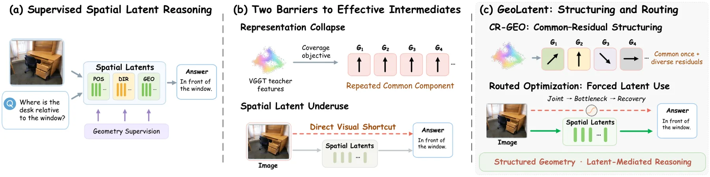

GeoLatent：用几何引导的潜在结构化与路由优化做 3D 推理
GeoLatent: Geometry-Guided Latent Structuring with Routed Optimization for 3D Reasoning
用 CR-GEO 分离共享/残差教师几何 + 路由优化让答案学习经潜在中介：几何有效秩 1.00→3.87，屏蔽潜在读出方向准确率 89.1%→25.8%，SPAR-Bench 73.0%、SPBench 72.1%、三基准均值 62.8%。
Acc
effective rank
intervention
POS/DIR
作者、单位与技术谱系 · Research context
作者与单位
研究脉络
- 分解式空间潜在（GeoAnchor）方法基座关系：在其分解潜在（位置/方向/全局几何）基础上，用 CR-GEO 与路由优化解决塌缩与未充分使用。[论文第 1 节与图 3]
- VGGT / 深度基础模型教师技术基座关系：用 VGGT 特征与深度基础模型监督 POS/DIR/GEO 目标，作为几何监督来源。[论文第 4.1 节]
- 本篇推进：CR-GEO + 路由优化本篇推进关系：把几何对齐拆成共享/残差分量，并用路由优化让答案学习经潜在中介。[论文第 1 节与结论]
合作网络
- 同济大学 ↔ 香港理工大学 跨机构署名Tongji University → The Hong Kong Polytechnic University关系：共同署名[arXiv 首页署名]
- 对 VGGT / Depth Anything 教师特征的技术依赖GeoLatent 几何监督 → VGGT + Depth Anything v3关系：明确技术依赖[论文第 4.1 节]
作者与单位取自 arXiv 首页署名；脉络依据论文引用与自述；论文为分享许可（CC BY 4.0），未声明公开代码，故不登记代码节点。
方法本质拆解 · What actually changed
是不是微调？
是在 Qwen3-VL-2B 上训练：视觉编码器冻结，可学的是 merger/LLM/潜在模块；训练分三阶段（含 CR-GEO 几何对齐与路由优化）。相比 GeoAnchor，本方法改的是几何对齐目标与优化路由，而非更换骨干。
有没有额外约束？
关键约束是 CR-GEO：把教师几何拆成共享与残差分量分别对齐，防止几何表示塌缩到单一方向；路由优化阶段还约束「视觉答案学习必须经潜在中介」，随后再在几何监督下恢复完整注意力。教师特征来自 VGGT（多尺度池化）与深度基础模型监督的 POS/DIR 目标。
推理/后端到底做了什么？
推理是标准 VLM 前向，不需要额外后端：分解潜在（POS/DIR/GEO）在层间作为可读变量参与答案计算。没有优化求解或因子图；其差异体现在训练期塑造的表示与注意力路由，而非推理期新增模块。
方法本质是什么？
本质是「先让潜在表示分化出位置/方向/全局几何，再强制答案学习真的经由它」，并用有效秩与干预证明表示既分化又被使用。它没有做的是以人为中心的参考系建模，也未证明结论能直接迁移到更大模型或具身任务。
输入为单张图像+空间问题；改变的位置是几何/空间中间表示的对齐目标（CR-GEO）与答案学习的信息通路（路由优化）；约束/合并动作是共享/残差几何对齐 + 先经潜在中介再恢复注意力；直接效果是表示分化且被使用，空间推理任务提升。

桥接价值Bridge
桥接价值
GeoLatent 的价值在于把「空间推理是否有几何结构、是否真用了该结构」拆成可量化的诊断（有效秩、分配信息、潜在读出干预），而不是只看最终答对率。这为我们评估几何/空间中间表示提供了可迁移的方法：不仅问『准不准』，还要问『表示是否分化、是否被真正使用、是否依赖视觉』。
方法与模块Method
方法摘要
在 Qwen3-VL-2B 上，CR-GEO 把教师几何分成共享分量与残差分量分别对齐，避免几何潜在塌缩到单一方向；路由优化则联合训练几何与语言，在瓶颈阶段临时把视觉答案学习引导经分解潜在中介，之后再在几何监督下恢复完整注意力。分解潜在包含位置（POS）、方向（DIR）与全局几何（GEO）三部分。
可迁移模块
第一是「表示结构诊断三件套」：有效秩、分配信息、以及屏蔽潜在读出的干预实验，可直接用于检验我们自己的几何/多传感器中间表示是否真的被下游使用。第二是「路由优化」思路：分阶段改变信息通路（先强制经中间表示、再恢复）以塑造表示，可用于我们想让某类先验在训练期被充分利用的场景。

证据Evidence
关键证据与数字
表示结构（论文表 2）：CR-GEO 把几何有效秩从 1.00 提到 3.87、分配信息从 ≈0 提到 0.228；屏蔽下游潜在读出使匹配 K=8 模型在 128 道方向问题上从 89.1% 掉到 25.8%。局部几何（论文 4.3 节）：在 504 条训练不相交记录上 POS 误差 0.338 m、独立 DIR 余弦 0.899；把 RGB 换成异场景图像使 POS 误差从 0.389 升到 1.474 m，说明解码几何确实依赖对应图像。任务成绩（论文表 1）：SPAR-Bench 73.0%、SPBench 72.1%、三基准均值 62.8%（GeoAnchor 61.7%），SPAR 的 View 类提升 7.5 分。
边界与下一步Limits & Next Step
边界与风险
论文明确：聚合准确率无法判断表示是否分化或潜在是否被使用（no-GEO 对照均值 62.4% 与 62.8% 接近），必须靠结构与干预分析区分；以人为中心的参考系问题需要估计参考人朝向，当前潜在词汇未显式表示，仍是自然的扩展方向。风险在于：结论建立在 Qwen3-VL-2B 与单图设定上，跨骨干复现虽给 Qwen2.5-VL-3B，但尚未验证到更大模型或视频/具身场景。
下一步实验
第一，把「有效秩 + 潜在读出干预」作为我们几何中间表示的标准诊断项，检查表示是否塌缩、是否被真正使用。第二，复现路由优化：在我们希望强制的信息通路（如先验→状态）上做『先引导经中间表示、再恢复』的分阶段训练。第三，测跨骨干可迁移性：把 CR-GEO 用到我们实际的 VLM/几何骨干组合上，报告表示结构与下游任务是否同步改善。